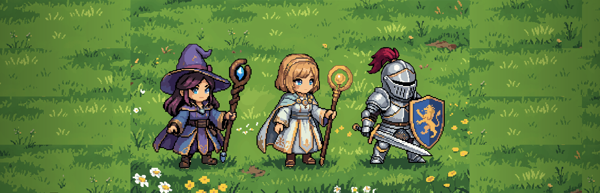
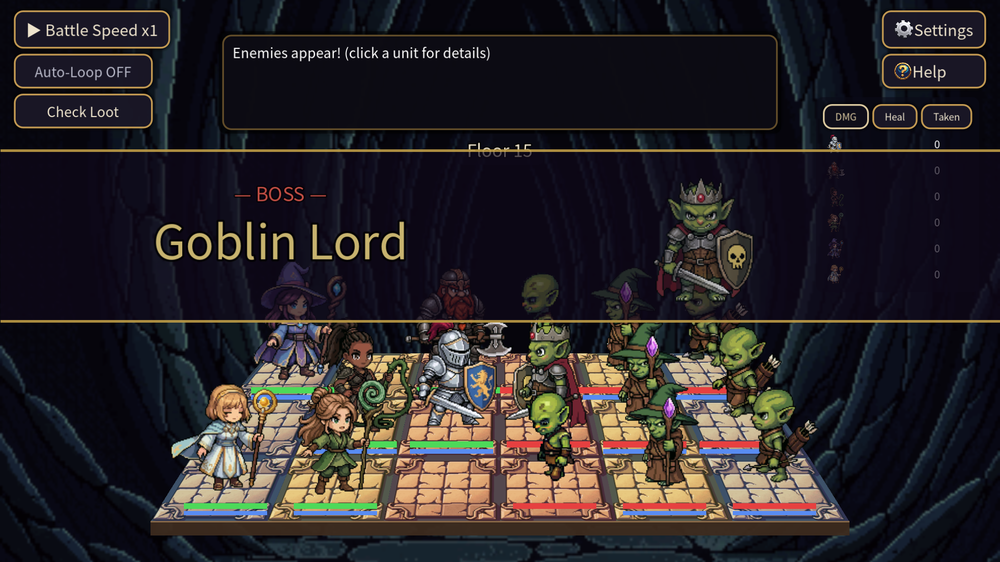
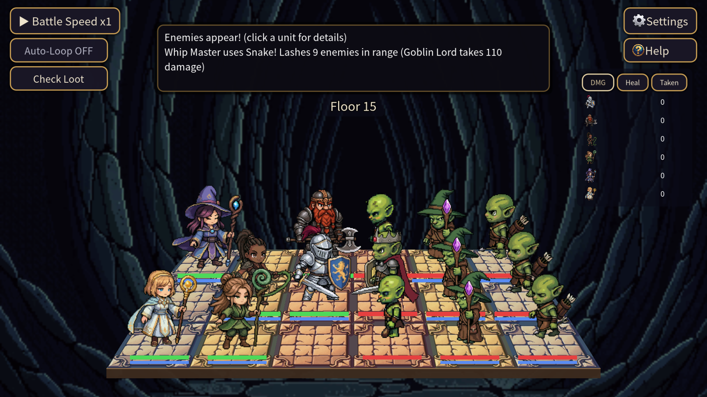
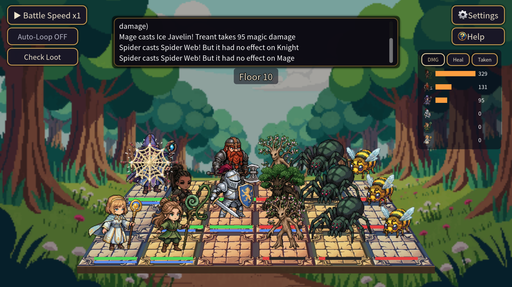
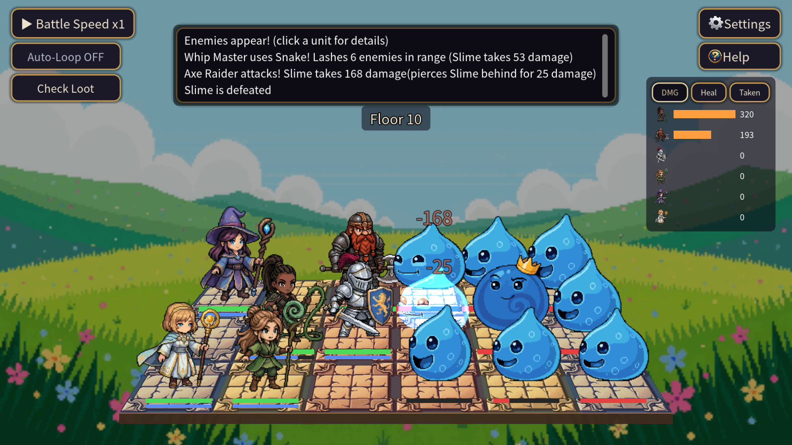
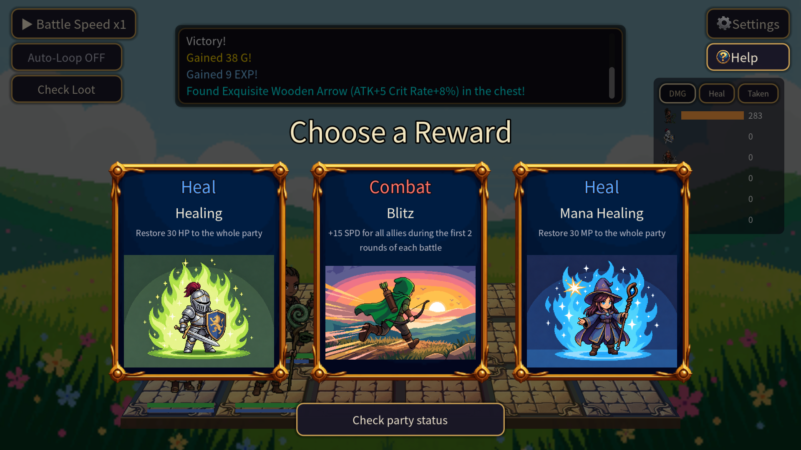
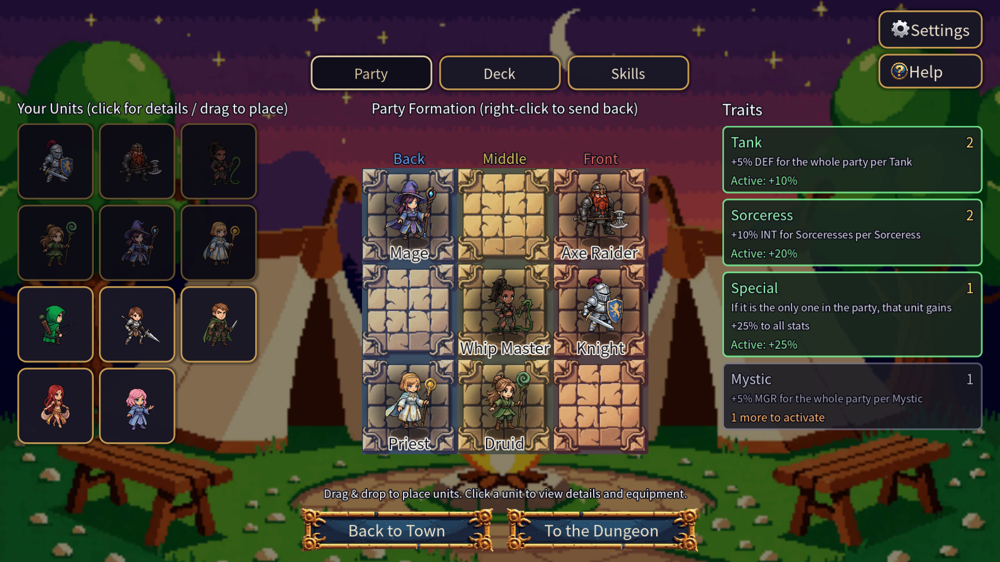
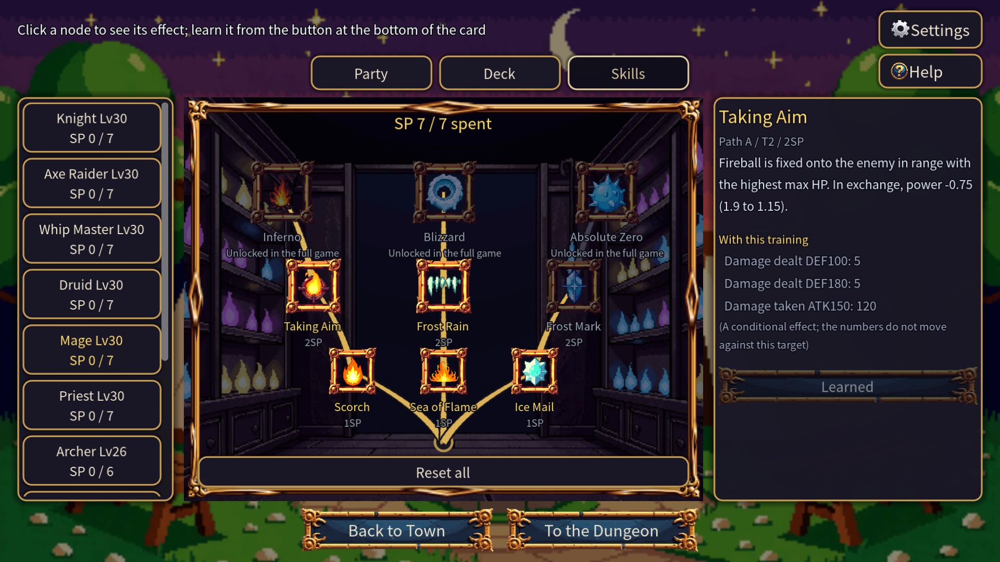

Hire heroes, place them on the board, and watch. / 仲間を雇って並べたら、あとは見守るだけ。
| Title タイトル | Boardbound Heroes |
|---|---|
| Genre ジャンル | Roguelike autobattler / fantasy · ローグライク・オートバトラー |
| Developer 開発・販売 | Calvis Studio (solo developer, Japan) · 日本・個人開発 |
| Platform 対応機種 | Windows (Steam) |
| Players プレイ人数 | Single player · 1人 |
| Languages 対応言語 | 日本語 / English / 简体中文 / 한국어 (text only, no voice) |
| Demo 体験版 | October 19, 2026 · free · 2026年10月19日公開・無料 |
| Full release 製品版 | 2026, price TBA · 2026年予定・価格未定 |
| Event イベント | Steam Next Fest, October 19-26, 2026 (PDT) |
| Steam page ストア | store.steampowered.com/app/5015030/ |
| Engine エンジン | Godot 4.7 |
| Contact 連絡先 | boardboundheroes@gmail.com |
The trailer is on the Steam page, in Japanese, English, Simplified Chinese and Korean - the version shown follows your Steam language: https://store.steampowered.com/app/5015030/. The MP4 files are available on request. / 予告編はSteamストアページで4言語とも公開しています。MP4ファイルが必要な場合はご連絡ください。
A fantasy autobattler: hire heroes, set them on the board and watch them fight. Rows, range and elements decide battles on a shared 6x3 board, so the same party wins or loses depending on how you arrange it. Battles run up to 4x speed, with auto-looping for idle play.
Boardbound Heroes is a roguelike autobattler about a young survivor whose home was burned by the Demon King's army, gathering companions and descending into dungeons.
You never act during a battle. You hire heroes at the tavern, equip them and place them on a 3x3 grid. That is all you do. The two 3x3 grids meet in the middle to form one shared 6x3 board, and units take turns in speed order, automatically. Because of that, everything you decide before the fight is the fight: which row a hero stands in, whether their range reaches the enemy back line, whether you can hit a weakness. The same six heroes can win or lose depending only on how they are arranged.
Progression is built around not being able to take everything. Each class has a skill tree of three paths and three tiers, but the points you earn never cover half of its nodes. What you raise and what you give up turns two heroes of the same class into different characters.
Every few floors you draw three cards from a ten-card support deck you built yourself, and keep one. How much healing to include, how much damage - you are choosing how to win while you build the deck, before the run begins.
Three dungeons - Grassland, Forest and Cave - and 35 floors, guarded at the bottom by the Slime King, Elderwood and the Goblin Lord. Eleven classes, all three difficulties, and skill trees unlocked up to tier 2. The forge, the shop and support-deck upgrades all work as they do in the full game. The full game adds the Desert and the dungeons beyond it, plus three more classes: Cavalier, Gunner and Strategist. Roughly 2-4 hours.
仲間を雇って盤上に並べたら、あとは戦いを見守るだけ。敵味方が6列×3段の盤で自動で戦うファンタジー・オートバトラーです。前衛・中衛・後衛の並び、射程、属性の相性で、同じ仲間でも勝敗は大きく変わります。戦闘は最大4倍速、自動周回による放置プレイにも対応しています。
魔王の軍勢に故郷を焼かれた若者が、仲間を集めてダンジョンへ挑む、ローグライク・オートバトラーです。
プレイヤーが戦闘中に操作することはありません。酒場で仲間を雇い、装備を与え、3×3のマスに並べる。やることはそれだけで、あとは敵味方が6列×3段の連結した盤の上で速度順に自動で戦います。だからこそ、戦う前の準備がそのまま結果になります。前衛・中衛・後衛のどこに置くか、各ユニットの射程が敵の後衛まで届くか、相手の弱点属性を突けるか。同じ仲間でも並べ方ひとつで勝敗がひっくり返ります。
育成では「全部は取れない」ことを徹底しています。職業ごとのスキルツリーは3路線×3段ありますが、手に入るポイントは全ノードの半分にも届きません。何を伸ばして何を諦めるかで、同じ職業でも別人に育ちます。
階層をいくつか進むごとに、自分で編成した10枚のサポートデッキから3枚が引かれ、1枚を選びます。回復を何枚入れるか、火力を取るか、デッキを組む段階から勝ち方を決めていくことになります。
草原・森林・洞窟の3ダンジョン、全35階層。それぞれの最深部ではスライムキング、エルダーウッド、ゴブリンロードが待ち構えます。仲間にできる職業は11種、難易度は3段階、スキルツリーは2段目まで解放。鍛冶や売店、サポートデッキの強化も製品版と同じように遊べます。製品版では砂漠から先のダンジョンと、キャバリエ・ガンナー・軍師の3職業が加わります。プレイ時間の目安は2〜4時間です。
雇用伙伴、在棋盘上布阵，接下来只需观看战斗。这是一款敌我双方在6列×3行的棋盘上自动交战的奇幻自动战斗游戏。前排、中排、后排的站位，射程与属性克制，都会让同一支队伍的胜负截然不同。战斗最高可4倍速进行，并支持自动循环，挂机游玩也很轻松。
《Boardbound Heroes》是一款 Roguelike 自动战斗游戏。故乡被魔王大军焚毁的年轻人集结同伴，向地下城发起挑战。
战斗中玩家不进行任何操作。在酒馆雇用伙伴、为他们装备武具、在3×3的格子上布阵——你要做的只有这些，之后敌我双方便会在中央相连的6列×3行棋盘上，按速度顺序自动交战。正因如此，战斗前的准备会原封不动地变成结果: 放在前排、中排还是后排，射程能否够到敌方后排，能否打中弱点属性。
在养成上，本作彻底贯彻了"无法全部获得"。每个职业的技能树有3条路线×3层，但技能点连全部节点的一半都不到。每前进若干层，游戏还会从你亲手编成的10张支援卡组中抽出3张，由你选择1张。
可挑战草原、森林、洞窟三座地下城，共35层，史莱姆之王、长老树与哥布林领主分别在各自的最深处等候。可招募职业11种，难度3档，技能树开放至第2层。正式版将加入沙漠及之后的地下城，以及骑将、枪手、军师3种新职业。游玩时长约2〜4小时。
동료를 고용해 판 위에 배치하면, 그다음은 전투를 지켜보기만 하면 됩니다. 아군과 적군이 6열×3단의 판에서 자동으로 싸우는 판타지 오토배틀러입니다. 전위·중위·후위 배치와 사거리, 속성 상성에 따라 같은 동료로도 승패가 크게 달라집니다. 전투는 최대 4배속, 자동 반복으로 방치 플레이도 가능합니다.
《Boardbound Heroes》는 마왕의 군세에 고향을 잃은 젊은이가 동료를 모아 던전에 도전하는 로그라이크 오토배틀러입니다.
전투 중 플레이어가 조작하는 것은 없습니다. 선술집에서 동료를 고용하고, 장비를 주고, 3×3 칸에 배치한다. 하는 일은 그것뿐이고, 이후에는 6열×3단의 판 위에서 속도 순으로 자동으로 싸웁니다. 그렇기 때문에 전위·중위·후위 중 어디에 둘 것인가, 사거리가 적 후위까지 닿는가, 약점 속성을 찌를 수 있는가 하는 준비가 그대로 결과가 됩니다.
직업별 스킬 트리는 3개 노선 × 3단이지만, 포인트는 전체 노드의 절반에도 미치지 못합니다. 또한 몇 층마다 직접 편성한 10장의 서포트 덱에서 3장을 뽑아 1장을 고르게 됩니다.
초원·숲·동굴 3개 던전, 총 35층. 각 던전 최심부에는 슬라임 킹, 엘더우드, 고블린 로드가 기다립니다. 직업 11종, 난이도 3단계, 스킬 트리는 2단계까지. 정식판에서는 사막 이후의 던전과 카발리에·거너·군사 3개 직업이 추가됩니다. 플레이 타임은 약 2〜4시간입니다.
1920x1080 PNG. English versions below; Japanese versions are in images/screenshots_ja.







⬇ Download everything (ZIP, 22MB) screenshots, key art, logos and the text in 4 languages / 全素材と4言語のテキスト
These images and the trailer may be used freely in articles, videos and streams, including edited forms. Please credit Calvis Studio. / 記事・動画・配信での使用は自由です。クレジットは「Calvis Studio」。
The demo is free for everyone on Steam from October 19. If you would like to play before then, ask and we will send a standalone Windows build (zip) that runs without Steam.
体験版は10月19日からSteamで無料公開されます。それより前に遊びたい場合は、Steam不要で起動できる先行版(Windows・zip)をお送りします。
Many in-game assets were created during development with generative AI tools and then selected and edited by the developer: pixel art such as backgrounds, character animations, icons, effects and card illustrations (PixelLab), sound effects (ElevenLabs) and music (Tunee). AI assistance was also used to translate the game from Japanese into English, Simplified Chinese and Korean, and to write the store page text. The game does not generate any content with AI while it is running.
本作のゲーム内アセットの多くは、開発中に生成AIツールで作成し、開発者が選別・編集したものです。対象は、背景・キャラクターのアニメーション・アイコン・エフェクト・カード画像などのピクセルアート(PixelLab)、効果音(ElevenLabs)、BGM(Tunee)です。日本語から英語・簡体字中国語・韓国語への翻訳と、ストアページの文章にもAIの支援を使っています。ゲームの実行中にAIでコンテンツを生成することはありません。